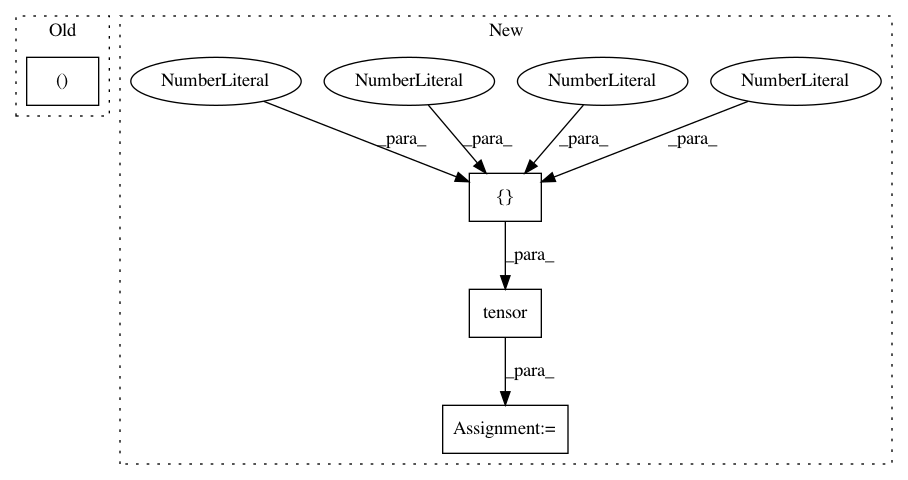

d2ee769ba220e135312df733a256ad37f354227f,test/nn/conv/test_gravnet_conv.py,,test_gravnet_conv,#,5
Before Change
def test_gravnet_conv():
num_nodes, in_channels, out_channels = 20, 16, 32
x = torch.randn((num_nodes, in_channels))
conv = GravNetConv(in_channels, out_channels, space_dimensions=4,
After Change
x1 = torch.randn(8, 16)
x2 = torch.randn(4, 16)
batch1 = torch.tensor([0, 0, 0, 0, 1, 1, 1, 1])
batch2 = torch.tensor([0, 0, 1, 1])
conv = GravNetConv(16, 32, space_dimensions=4, propagate_dimensions=8, k=2)
assert conv.__repr__() == "GravNetConv(16, 32, k=2)"
out11 = conv(x1)
assert out11.size() == (8, 32)
out12 = conv(x1, batch1)
assert out12.size() == (8, 32)
out21 = conv((x1, x2))
assert out21.size() == (4, 32)
out22 = conv((x1, x2), (batch1, batch2))
assert out22.size() == (4, 32)
t = "(Tensor, OptTensor) -> Tensor"
jit = torch.jit.script(conv.jittable(t))
In pattern: SUPERPATTERN
Frequency: 3
Non-data size: 4
Instances
Project Name: rusty1s/pytorch_geometric
Commit Name: d2ee769ba220e135312df733a256ad37f354227f
Time: 2020-06-24
Author: matthias.fey@tu-dortmund.de
File Name: test/nn/conv/test_gravnet_conv.py
Class Name:
Method Name: test_gravnet_conv
Project Name: dmlc/dgl
Commit Name: e4ef8d1a80a922a5798268d4f31ff758b45620cb
Time: 2019-12-24
Author: mctt90@gmail.com
File Name: examples/pytorch/dis_kvstore/client.py
Class Name:
Method Name:
Project Name: rusty1s/pytorch_geometric
Commit Name: f74351f89db9a5b38f6b48c7b509bbf0d7a91023
Time: 2020-06-24
Author: matthias.fey@tu-dortmund.de
File Name: test/nn/conv/test_edge_conv.py
Class Name:
Method Name: test_dynamic_edge_conv_conv